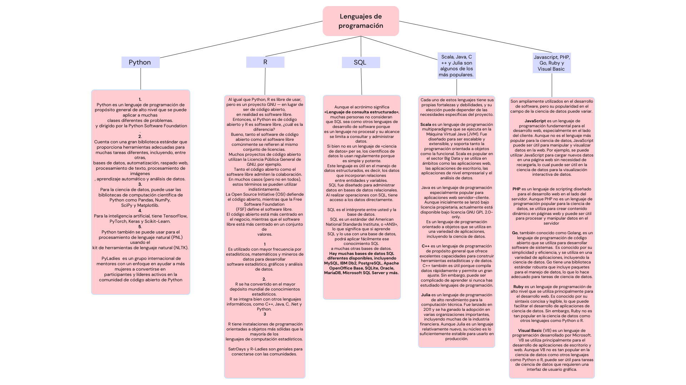
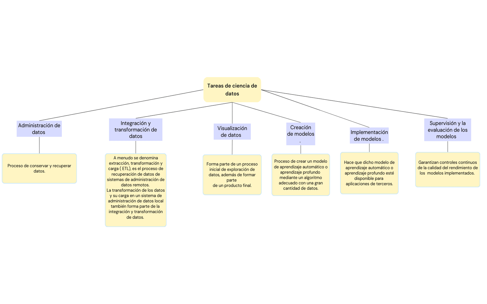
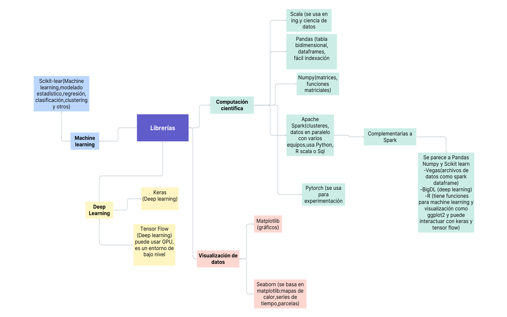

Los datos son fundamentales para los científicos de datos
y es necesario aprender cómo administrar, extraer, transformar, analizar y visualizar
esos datos.
Aunque se puede sobrevivir a la ciencia de datos sin habilidades de programación, es recomendable familiarizarse con la programación , conocer los lenguajes de programación más utilizados
y los marcos disponibles para la ciencia de datos.
Es importante utilizar las herramientas para ahorrar tiempo y descubrir inspiración.
La programación visual está disponible en muchas herramientas.
El software de código abierto está liderando el campo de la ciencia de datos, pero sus costos totales de propiedad, o «TCO», pueden ser mayores a veces debido a los costos de configuración, personalización y mantenimiento.
Como resultado, el software comercial también tiene su lugar, especialmente porque la nueva generación de software de ciencia de datos comerciales aprovecha el software de código abierto y los estándares abiertos.
Esto facilita la migración entre herramientas y puede reducir el TCO general.
Lenguajes de programación

Hay una cantidad vertiginosa de elección cuando se trata de lenguajes de programación.
Cada uno tiene sus propias fortalezas y debilidades y no hay una respuesta correcta a la pregunta
de cuál se debe aprender primero. La respuesta a esa pregunta depende en gran medida de las necesidades, los problemas que se están tratando de resolver y para quién se está resolviendo.
Python, R y SQL son los lenguajes más recomendados a considerar en primer lugar.
Tareas de ciencia de datos

La ciencia de datos es un campo multidisciplinario que combina matemáticas, estadísticas, programación especializada, análisis avanzado, inteligencia artificial y machine learning para descubrir información práctica en los datos de una organización. Las tareas de ciencia de datos pueden variar dependiendo del problema específico que se esté abordando, pero a menudo implican las siguientes etapas:
Recopilación de datos: Esta es la primera etapa en el ciclo de vida de la ciencia de datos, donde se recopilan datos de diversas fuentes y métodos. Estos datos pueden ser estructurados (como datos de clientes) o no.
Análisis descriptivo: En esta etapa, se examinan los datos para obtener información sobre lo que ha ocurrido u ocurre en el entorno de datos. Esto se caracteriza por visualizaciones de datos, como gráficos, tablas o narraciones generadas.
Preparación de datos: Esta etapa implica la limpieza y la transformación de los datos para prepararlos para el análisis. Esto puede incluir la gestión de datos que faltan, la corrección de errores y la eliminación de datos atípicos.
Exploración de datos: En esta etapa, se realiza un análisis preliminar de los datos para planificar otras estrategias para su modelado. Los científicos de datos obtienen una comprensión inicial de los datos mediante estadísticas descriptivas y herramientas de visualización.
Modelado de datos: En esta etapa, se utilizan algoritmos y técnicas estadísticas para construir modelos que pueden predecir o interpretar los datos. Esto puede incluir la clasificación, la regresión, la agrupación o la detección de anomalías.
Interpretación de resultados: En la última etapa, los científicos de datos trabajan con los analistas y las empresas para convertir la información de los datos en acción. Esto puede incluir la creación de visualizaciones de datos, la interpretación de los resultados del modelado y la traducción de los hallazgos en recomendaciones prácticas.
Además de estas tareas, los científicos de datos también deben tener habilidades en la programación, la estadística y la matemática, y deben ser capaces de trabajar de manera eficiente con grandes volúmenes de datos.
Librerías basadas en Python

Las bibliotecas son un conjunto de funciones y métodos que le permiten realizar una amplia
variedad de acciones sin tener que escribir el código.
El gráfico muestra las bibliotecas de Python: bibliotecas de computación científica, bibliotecas de visualización, bibliotecas de aprendizaje automático de alto nivel y aprendizaje profundo, «De alto nivel» simplemente significa que no tiene que preocuparse por los detalles.
Las bibliotecas suelen contener módulos integrados que proporcionan diferentes funcionalidades que
se pueden usar directamente, a veces se denominan «marcos».

Interfaces de programación de aplicaciones o API,es un conjunto de protocolos y definiciones que permiten que diferentes componentes de software se comuniquen y transfieran datos.Las API se originaron en la década de 1940 y han evolucionado significativamente desde entonces. Inicialmente describieron una interfaz sólo para programas orientados al usuario final, conocidos como programas de aplicación.Hoy en día, el término es más amplio e incluye también software de utilidad e incluso interfaces de hardware.Por ejemplo, una aplicación meteorológica en el teléfono "se comunica" con el sistema de software de una oficina meteorológica a través de API y muestra actualizaciones meteorológicas diarias en el teléfono.
Un conjunto de datos es una colección estructurada de datos. Los datos incluyen información que
puede representarse como texto, números o medios, como archivos de imágenes, audio o vídeo.
Un conjunto de datos que está estructurado como datos tabulares comprende una colección de filas, que a su vez comprenden columnas que almacenan la información. Por lo general,estos conjuntos de datos no se comparten públicamente, sin embargo, con el tiempo, cada vez más entidades públicas y privadas, como instituciones científicas,
gobiernos, organizaciones e incluso empresas, han empezado a poner los conjuntos de datos a disposición del público como «datos abiertos», proporcionando una gran cantidad de información de forma gratuita. Estos datos han desempeñado un papel importante en el crecimiento de la ciencia de datos, el aprendizaje automático y la inteligencia artificial, y han permitido a los profesionales perfeccionar sus habilidades en una amplia variedad de conjuntos de datos.
Es importante reconocer que la distribución y el uso de los datos abiertos pueden estar restringidos, tal y como se definen en sus condiciones de licencia.
A falta de una licencia para la distribución de datos abiertos, muchos conjuntos de datos se compartían en el pasado bajo licencias de software de código abierto. la Fundación Linux creó el Acuerdo de licencia de datos comunitarios para cubrir las consideraciones específicas relacionadas con la distribución y el uso de los conjuntos de datos, sin imponer ninguna restricción a los resultados que se pueda obtener al utilizar los datos. Un aspecto importante a tener en cuenta es la calidad y precisión de los datos, que pueden variar considerablemente en función de quién recopiló y aportó el conjunto de datos.
A pesar del crecimiento de los conjuntos de datos abiertos que están disponibles para el público, aún puede resultar difícil descubrir conjuntos de datos que sean de alta calidad y que tengan
términos de licencia y uso claramente definidos.
Para ayudar a resolver este desafío, IBM creó el Data Asset eXchange, o «DAX,el repositorio de datos abiertos.
los modelos son herramientas esenciales en la ciencia de datos que permiten a los científicos de datos hacer predicciones precisas, identificar patrones y tendencias, y tomar decisiones informadas, pueden ser de varios tipos, incluyendo modelos de regresión, modelos de clasificación, modelos de clustering y modelos de series temporales, entre otros. Cada uno de estos modelos tiene un propósito específico y se utiliza en diferentes contextos.
Por ejemplo, un modelo de regresión puede utilizarse para predecir una variable de salida (también conocida como variable dependiente) basándose en una o más variables de entrada (también conocidas como variables independientes). Un modelo de clasificación puede utilizarse para predecir la categoría o clase a la que pertenece un dato basándose en sus características. Un modelo de clustering puede utilizarse para agrupar datos similares en grupos o "clusters".
Para utilizar estos modelos de manera efectiva, los científicos de datos deben seguir una serie de pasos, que incluyen la recopilación de datos (pueden provenir de diversas fuentes, como bases de datos internas o externas, software CRM de la empresa, registros del servidor web, redes sociales, entre otros), la depuración de datos, el análisis exploratorio de datos, la creación de un modelo utilizando algoritmos de machine learning, y la interpretación y comunicación de los resultados del modelo.
Model Asset eXchange de IBM Developer
Para reducir el tiempo de generación de valor, existe la posibilidad de aprovechar los modelos previamente entrenados para determinados tipos de problemas.
Estos modelos previamente entrenados pueden estar listos para usarse de inmediato o pueden tardar menos en entrenarse.
El Model Asset eXchange es un repositorio gratuito de código abierto para microservicios de aprendizaje profundo personalizables y listos para usar.
Estos microservicios están configurados para utilizar modelos de aprendizaje profundo de última generación previamente entrenados o personalizables para resolver problemas empresariales comunes.
Estos modelos se han revisado y probado y se pueden implementar rápidamente en entornos locales y en la nube.
Todos los modelos de MAX están disponibles bajo licencias permisivas de código abierto, lo que facilita su uso con fines personales y comerciales y reduce el riesgo de responsabilidades legales.
En MAX, puede encontrar modelos para una variedad de dominios, incluidos el análisis de imágenes, audio, vídeo y lenguaje natural.
Veamos los componentes de un microservicio típico que sirve modelos.
Cada microservicio incluye los siguientes componentes:
- Un modelo de aprendizaje profundo previamente entrenado.
- Código que preprocesa la entrada antes de que el modelo la analice y código que posprocesa la salida del modelo.
- Una API pública estandarizada que pone la funcionalidad de los servicios a disposición de las aplicaciones.
Los microservicios de servidor de modelos MAX se crean y distribuyen como imágenes de Docker de código abierto.
Docker es una plataforma de contenedores que facilita la creación de aplicaciones y su despliegue
en un entorno de desarrollo, prueba o producción.
La fuente de imágenes de Docker se publica en GitHub y se puede descargar, personalizar según sea necesario y usarse en entornos personales o comerciales.
Puede implementar y ejecutar estas imágenes en un entorno de prueba o producción mediante Kubernetes, un sistema de código abierto para automatizar el despliegue, el escalado y la administración de aplicaciones en contenedores, en nubes privadas, híbridas o públicas.
Red Hat OpenShift, una popular plataforma de Kubernetes de nivel empresarial, está disponible en
IBM Cloud, Google Cloud Platform, Amazon Web Services y Microsoft Azure.
Los microservicios que sirven modelos incluyen una API REST que los desarrolladores pueden utilizar para incorporar el aprendizaje profundo en sus aplicaciones y servicios.
Como las API REST se pueden utilizar con cualquier lenguaje de programación, puede integrar fácilmente estos servicios en su ecosistema actual.
La API expone un punto final de predicción y uno o más puntos finales de metadatos.
En este ejemplo, se muestran los puntos finales del microservicio de detección de objetos.
El punto final /model/predict toma una imagen como entrada y devuelve como respuesta una lista
de los objetos detectados en la imagen, junto con las coordenadas del cuadro delimitador
que identifican la ubicación del objeto detectado.
Algunos puntos finales de predicción también pueden aceptar parámetros de entrada adicionales que afectan a los resultados obtenidos, como los filtros.
Este microservicio expone dos puntos finales de metadatos: /model/labels y /model/metadata.
Estos puntos finales proporcionan información como los objetos que se pueden detectar y el modelo de aprendizaje profundo que se utiliza para obtener la respuesta dada la entrada.
Analicemos más de cerca lo que ocurre cuando una aplicación invoca el punto final de predicción.
En este ejemplo, un usuario ha seleccionado una imagen en una aplicación web, se invoca el punto final de predicción y se carga la imagen.
El microservicio prepara la imagen de entrada para su procesamiento, ejecuta el modelo de aprendizaje profundo que identifica los objetos de la imagen, genera una respuesta a partir de los resultados de la predicción y devuelve el resultado a la aplicación.
La aplicación representa los resultados dibujando cuadros delimitadores y etiquetas.

RStudio es gratuito y de código abierto.
Actualmente, R admite más de 15.000 paquetes que se pueden instalar para ampliar la funcionalidad de R.
Funciones RStudio unificadas
-Edición y ejecución de código fuente
-Visualización de la consola R
-Visualización de parcelas.
-Visualización de datos en forma de tabla.
El comando que se usa para instalar paquetes en R es : install.packages("nombre del paquete")
RStudio admite el desarrollo en Python.
Es utilizado con mayor frecuencia por estadísticos, matemáticos y mineros de datos para desarrollar
software estadístico, gráficos y análisis de datos.
La sintaxis orientada a matrices del lenguaje hace que sea más fácil traducir de matemáticas a código, especialmente para alguien con un fondo de programación mínimo o sin un fondo mínimo.
R se ha convertido en el mayor depósito mundial de conocimientos estadísticos.R se integra bien con otros lenguajes informáticos, como C++, Java, C, .Net y Python.
Las operaciones matemáticas comunes, como la multiplicación de matrices, funcionan directamente de
la caja.
R tiene instalaciones de programación orientadas a objetos más sólidas que la mayoría de los
lenguajes de computación estadística.
SQL es el intérprete entre usted y la base de datos. SQL es un estándar del American National Standards Institute, o «ANSI», lo que significa que si aprende SQL y lo usa con una base de datos, podrá aplicar fácilmente ese conocimiento SQL a muchas otras bases de datos. Hay muchas bases de datos SQL diferentes disponibles, incluyendo MySQL, IBM Db2, PostgreSQL, Apache OpenOffice Base, SQLite, Oracle, MariaDB, Microsoft SQL Server y más.La sintaxis del SQL que escribe puede cambiar un poco en función del sistema de administración de bases de datos relacionales que está utilizando.
El acrónimo significa «Lenguaje de consulta estructurado», muchas personas no consideran que SQL sea como otros lenguajes de desarrollo de software porque es un lenguaje no procesal y su alcance se limita a consultar y administrar datos. Si bien no es un lenguaje de «ciencia de datos» per se, los científicos de datos lo usan regularmente porque es simple y potente.
Apareció por primera vez en 1974 y SQL fue desarrollado en IBM. SQL fue diseñado para administrar datos en bases de datos relacionales.
Una base de datos relacional está formada por colecciones de tablas bidimensionales. Cada una de estas tablas está formada por un número fijo de columnas y cualquier número de filas.
También se han desarrollado interfaces SQL para muchos repositorios de NoSQL y Big Data. El lenguaje SQL se subdivide en varios elementos de lenguaje, incluyendo cláusulas, expresiones, predicados, consultas y sentencias.
Conocer SQL ayudará a realizar muchos trabajos diferentes en ciencia de datos, incluyendo negocios y análisis de datos, y es una necesidad en la ingeniería de datos. Al realizar operaciones con SQL, tiene acceso a los datos directamente.
-Git es un sistema para el control de versiones del código fuente.
-Git también es muy útil para la ciencia de datos, ya que la ciencia de datos a menudo implica escribir y administrar una gran cantidad de código fuente.
-Solo el propieatrio puede acceder al repositorio local y a la puesta en escena.
-Todos los contribuyentes pueden acceder al repositorio remoto.
-Se puede contribuir al proceso de una corrección de errores a un repositorio externo, con una bifurcación el repositorio, actualizando la bifurcación y creando una solicitud de extracción.
-Es una buena práctica eliminar o reemplazar las credenciales antes de publicar en GitHub.
Jupyter Notebooks / JupyterLab
-Herramienta que usan la mayoría de los desarrolladores de Python.
-Jupyter Notebooks / JupyterLab soportan el desarrollo en R.
-La herramienta unifica documentación, código fuente y visualizaciones de datos en un solo documento.
-Sólo el propietario puede acceder a la puesta en escena.
-Todos los contribuyentes pueden acceder al repositorio remoto.
-Cuando trabaje en un Jupyter Notebook, antes de regresar a un proyecto, es importante Guarde su cuaderno
-Antes de ejecutar un cuaderno, se recomienda insertar una celda en la parte superior del cuaderno para describir lo que hace el cuaderno.
-Al compartir una versión de solo lectura de un cuaderno, puede elegir compartir solo texto y resultados. Todo el contenido, excluyendo las celdas de códigos confidenciales. Todo el contenido, incluido el código con un enlace permanente.
En Watson Studio, un proyecto es cómo organizas tus recursos para lograr un objetivo particular.
-Los recursos pueden incluir datos, colaboradores y activos analíticos como cuadernos y modelos.
-Es necesario crear un token de acceso para poder publicar un cuaderno en su repositorio de GitHub.
Si desea programar un cuaderno en Watson Studio para que se ejecute en un momento diferente, puede crear un trabajo.
-En la pestaña de entornos puede definir el tamaño del hardware y la configuración del software. Configuración de tiempo de ejecución para el editor de portátiles. Configuración de tiempo de ejecución para el editor de flujo,con las herramientas de Watson Studio, como los cuadernos.
-IBM Cloud utiliza grupos de recursos como una manera de organizar los recursos de su cuenta en agrupaciones personalizables para que pueda asignar rápidamente a los usuarios acceso a más de un recurso a la vez.
Otras herramientas de IBM
Open Neural Network eXchange (ONNX): Fue creado originalmente para modelos de aprendizaje profundo, redes neuronales, de código abierto, por Microsoft y Facebook, y se amplió posteriormente, para aprendizaje automático, ante la necesidad de tener una representación intermedia estándar.
Supongamos que trabajó duro para crear el mejor modelo de aprendizaje automático posible y la
canalización de preparación de datos para él. ¿Cómo va a implementar sus modelos?
En muchos escenarios prácticos, los modelos son construidos e implementados por diferentes equipos, utilizando diferentes programas, y tal vez lenguajes humanos. Los equipos utilizarán diferentes entornos informáticos y de almacenamiento de datos, y podría resultar difícil traducir su programa y los pasos de preparación y posterior procesamiento de datos asociados de un entorno a otro.
Actualmente hay varios enfoques que puede usar para resolver este problema, algunos comerciales,
algunos de código abierto. Sin embargo, cada uno generalmente admite solo un subconjunto de todos los modelos posibles, desde su creación hasta su implementación, por lo que un usuario se bloquea en un marco específico. Los estándares abiertos para la implementación de modelos están diseñados para admitir el intercambio de modelos entre una variedad más amplia de modelos patentados y de código abierto. Predictive Model Markup Language, o «PMML», fue el primer estándar de este tipo, basado en XML. Fue creado en la década de 1990 por el Grupo de Minería de Datos, un grupo de empresas que trabajan juntas en los estándares abiertos para la implementación de modelos predictivos. IBM y SPSS estuvieron entre los miembros fundadores del Grupo de Minería de Datos.
PMML 4.4 fue lanzado recientemente. Incluye 17 modelos estadísticos y de aprendizaje automático y muchas transformaciones de datos, funciones integradas, formas de combinar varios modelos juntos y otras características. Este estándar es ampliamente conocido y utilizado En 2013, creció la demanda de un nuevo estándar, uno que no describía los modelos y sus características, sino más bien el procedimiento de puntuación directamente, y uno que se basaba en JSON en
lugar de XML.
Esto llevó a la creación de Portable Format for Analytics, o PFA. PFA ahora es utilizado
por varias empresas y paquetes de código abierto.
Después de 2012, los modelos de aprendizaje profundo se hicieron ampliamente populares. Sin embargo, el PMML y el PFA no reaccionaron con la suficiente rapidez a su proliferación. La necesidad de una representación intermedia estándar se vio ampliada por la amplia variedad de marcos emergentes de aprendizaje profundo y equipos especializados.
PMML,PFA y ONNX son estándares abiertos para la serialización, el intercambio y el despliegue de modelos predictivos.
En 2017, Microsoft y Facebook crearon y de código abierto Open Neural Network Exchange
, o «ONNX». Originalmente creado para redes neuronales, este formato se amplió posteriormente para
admitir también el «aprendizaje automático tradicional».
Watson Knowledge Catalog: ayuda a los científicos de datos a catalogar y administrar todos sus recursos de datos.
Cataloga los datos y los activos de ML, ayudando a encontrar los activos relevantes, realiza un seguimiento del linaje de los activos, y hace cumplir la gobernanza de los datos.
La refinería de datos: proporciona herramientas gráficas para analizar y preparar datos. IBM Data Refinery aborda este problema y simplifica la tarea de refinar los datos y sus flujos de trabajo.
Proporciona un entorno de preparación de datos de autoservicio donde puede analizar, limpiar y preparar conjuntos de datos rápidamente. La refinería de datos está disponible con Watson Studio en la nube pública, la nube privada y el escritorio. Provee Visualización y preparación de la data.¿Cómo ayuda Data Refinery a crear canalizaciones de datos repetibles para cargas de trabajo de casi cualquier tamaño? Crea un trabajo programado y utiliza un entorno personalizado para ejecutar el flujo/canalización de datos en diferentes cargas de trabajo.
Entre sus características más resaltantes están:
-Flexibilidad de uso por su Interfaz de usuario intuitiva y plantillas de codificación habilitadas con potentes operaciones para dar forma y limpiar los datos.
-Visualización de datos y perfiles para detectar la diferencia y guiar los pasos de la preparación de datos.
-Instantáneas incrementales de los resultados que permiten al usuario calibrar el éxito con cada cambio iterativo.
-Guardar, editar y fijar los pasos ofreciendo la posibilidad de fijar de forma iterativa los pasos del flujo.
La refinería de datos ayuda a construir canalizaciones de datos repetibles para cargas de trabajo de casi cualquier tamaño, crenado un trabajo programado y utilizando un entorno personalizado para ejecutar el flujo de datos/la tubería en diferentes cargas de trabajo.
AutoAI: que calcula automáticamente la mejor canalización de datos y Watson OpenScale, que ayuda a garantizar la equidad y la explicabilidad de los modelos.
IBM SPSS Modeler: incluye capacidades y herramientas de gestión de datos para la preparación de datos, visualización, creación de modelos e implementación de modelos. El producto fue creado por Integral Solutions Limited en el Reino Unido en 1994 y fue originalmente llamado Clementine. Fue adquirida por una compañía llamada SPSS en 1998 y SPSS fue adquirida a su vez por IBM en 2009. SPSS Modeler es una aplicación de software de minería de datos y análisis de texto. Se utiliza para crear modelos predictivos y llevar a cabo otras tareas de análisis. Cuenta con una interfaz visual que permite a los usuarios aprovechar algoritmos estadísticos y de minería de datos sin necesidad de programación, ayuda a los analistas a crear potentes canalizaciones de aprendizaje automático utilizando una interfaz gráfica.
Incluye modelos de clasificación (para datos con un objetivo categórico).
-Modelos de regresión (para datos con un objetivo continuo).
-Modelos de agrupamiento (para datos sin variables objetivo o buscar relación entre variables dependientes e independientes).
-Otros tipos de modelos.
Los nodos que se utilizan para particionar los datos en un conjunto de entrenamiento y prueba en el flujo de Modeler son llamados nodos de partición en los flujos de Modeler.
El nodo tipo debe utilizarse en los flujos de Modeler antes de cualquier nodo de modelado.
El nodo de autoclasificación se utiliza para datos con una variable objetivo categórica.
El nodo numérico automático puede utilizarse para datos con una variable objetivo continua.
SPSS significa : Paquete estadístico para las ciencias sociales.
Los productos basados en SPSS incluyen interfaces gráficas fáciles de usar para amplias variedades de algoritmos estadísticos y de aprendizaje automático y transformaciones de datos
IBM SPSS Statistics: evolucionó a partir de un producto original que fue lanzado en 1968. Ese producto se llamaba «Paquete estadístico para las ciencias sociales» o «SPSS».
IBM SPSS Statistics es una aplicación de software de aprendizaje automático y estadístico y es ampliamente utilizado en instituciones académicas, agencias gubernamentales y grandes empresas. Se utiliza para construir modelos predictivos, realizar análisis estadísticos de datos y realizar otras tareas analíticas. La pantalla se parece mucho a una hoja de cálculo, muestra datos y permite la edición manual.
La sintaxis de IBM SPSS Statistics puede crearse utilizando la interfaz gráfica de usuario del editor de sintaxis.
IBM Watson Machine Learning
Es la herramienta comercial para implementar modelos.
Soporta la implementación de modelos construidos con la mayoría de los paquetes de código abierto, así como aquellos expresados en PMML o ONNX. También admite la implementación de flujos IBM SPSS Modeler y flujos de Modeler desde Watson Studio. La implementación se puede hacer usando una interfaz gráfica o código Python, y puede ser para la puntuación en línea a través de una API REST o puntuación por lotes.
Watson Machine Learning ayuda a integrar un modelo implementado en aplicaciones en forma
de fragmentos de código en varios lenguajes de programación.
AutoAI solo está disponible para modelos de clasificación y regresión; aunque existe un plan para
agregar soporte para modelos de series temporales en el futuro. Automatiza las tareas típicas de ciencia de datos y ayuda a obtener un mejor rendimiento de las canalizaciones de datos más rápido, al tiempo que simplifica la implementación de canalizaciones en producción en Watson Machine learning. Automatiza la preparación de la data, la selección del modelo, ingeniería de características, optimización de hiperparámetros, viendo el progreso en una interfaz gráfica.
Ayudan a garantizar la equidad y la explicabilidad de las canalizaciones de aprendizaje automático, así como a supervisar su rendimiento después de la implementación. Ayuda a proporcionar explicaciones para las predicciones de modelos que a menudo son difíciles de obtener, pero que son necesarias para el cumplimiento en algunas áreas de aplicación. Puede alertar a los usuarios cuando se detecta la deriva y explicar qué predictores la están causando. OpenScale realiza un seguimiento de las predicciones del modelo para los grupos especificados y comprueba el sesgo en las predicciones. Los usuarios necesitan saber que sus modelos de IA son justos, pero los datos en los que fueron entrenados pueden incluir sesgos no deseados que pueden incluirse involuntariamente en los modelos resultantes.
IBM Watson OpenScale puede detectar sesgos cuando un modelo está en producción y no solo cuando se está construyendo. Ahora la detección de sesgos es una cosa, OpenScale también puede mitigarlo creando un modelo degradado que se ejecute junto con el supervisado.
IBM Watson OpenScale explica las predicciones en un lenguaje amigable para los negocios. Por ejemplo, si se predijo en un modelo que una solicitud de crédito estaría en riesgo. OpenScale determina las características que contribuyeron positiva o negativamente a esa predicción y las describe. La explicación se presenta visualmente, así como en un resumen de texto basado en oraciones para garantizar la máxima claridad. Utilizando la tecnología de investigación patentada de IBM, OpenScale también genera un contraste de explicación. Mostrando los cambios mínimos para este registro de entrada, que produciría una salida diferente, cambiando la predicción de riesgo a no-riesgo.
Por lo tanto los servicios más importantes son : supervisión de la imparcialidad, el sesgo y la deriva del modelo.